En alternance (DB Cargo)
Apprenti IT : support de proximité
Support de proximité N1/N2 (≈ 20 tickets par semaine sous TopDesk) pour le siège, les ateliers et les conducteurs : postes Windows 11, smartphones, Citrix, Exchange et sensibilisation cyber.
Détails mission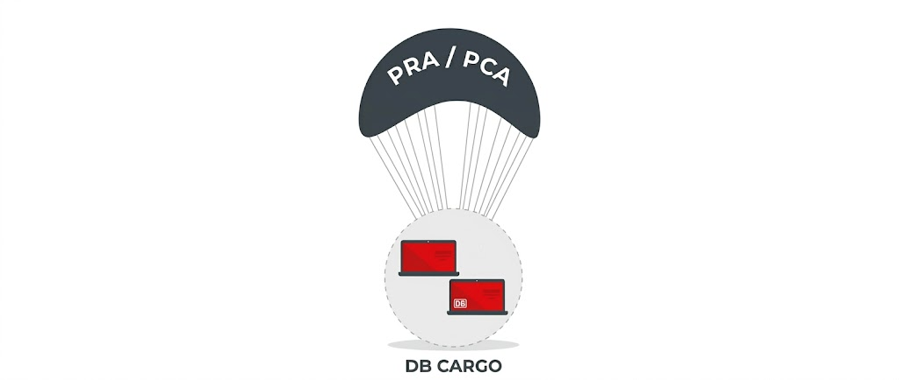
Continuité d'activité (PCA/PRA)
Réseau de secours du site critique de Valenton : routeur 4G, switch dédié avec Port Security, PC de repli hors domaine et serveur déporté. Objectif RTO < 15 min, tests de bascule validés.
Détails mission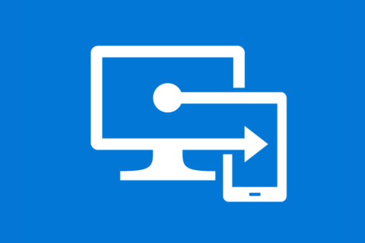
Migration MDM Intune
Migration de 100 % de la flotte mobile vers Microsoft Intune sans perte de données, et maintien en condition opérationnelle des terminaux conducteurs Samsung XCover 7.
Détails missionFastRoom : refonte graphique
Refonte graphique (front-end) de l'application interne de réservation des salles de réunion, réalisée en équipe avec la développeuse du service : disponibilités, lien Teams / Outlook, tablettes devant les salles.
Détails missionEn stage (Ministère de la Culture)
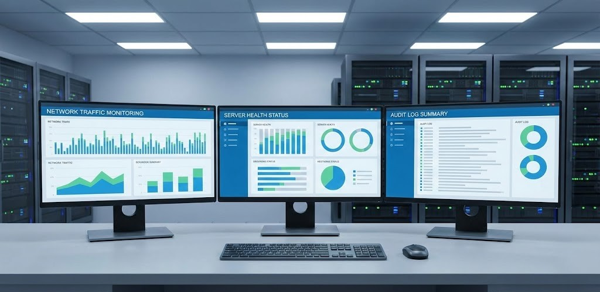
Supervision & Audit
Analyse de flux Streamcore, cartographie N2 et gestion capacitaire des liens WAN.
Voir la mission
Mise en place Scope DHCP
Création de scopes, configuration des options et gestion du Failover via Smart DHCP.
Voir la mission
Configuration Switch
Segmentation réseau, création de VLANs (1002/1120) et configuration des gateways.
Voir la mission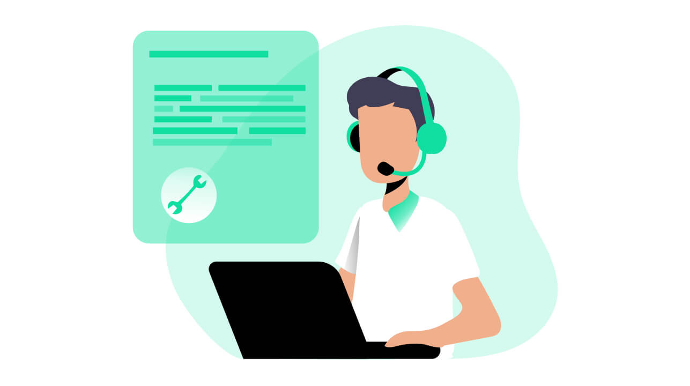
Support & Ticketing
Gestion des incidents N1 via ADN, administration des comptes et masterisation de postes.
Voir la missionProjets personnels & hackathon
Homelab Debian & Docker
Serveur Debian 12 sur client léger Dell OptiPlex 3000 : services Docker (Nextcloud, Pi-hole pour le filtrage DNS) et accès distant sécurisé via le VPN mesh Tailscale.
Voir le projetContrôleur Arduino × Godot
Réalisé lors d'une game jam (hackathon) au Lycée Le Rebours : contrôleur matériel sur mesure (Arduino UNO, encodeur, potentiomètre, joystick, LEDs, vibreurs) relié en temps réel au moteur Godot Engine pour un jeu audio-réactif, avec modélisation 3D de la manette sous Autodesk Fusion.
Élue 2e meilleure manette de la game jam
Voir le projetProjets de formation (BTS)
⭐ Projet de fin de BTS : haute disponibilité
Architecture 3 niveaux : HAProxy, Docker, IDS Suricata, HSRP et ACL.
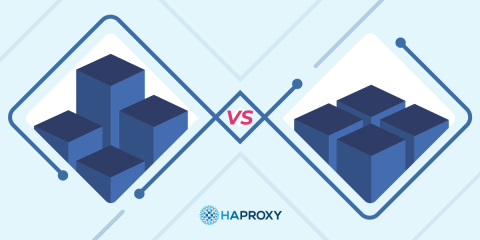
Haute disponibilité : volet système
Projet de fin de BTS (épreuve E6) : dossier technique de l'architecture haute disponibilité, avec répartition de charge HAProxy, conteneurisation Docker et IDS Suricata.
Ouvrir le Dossier Technique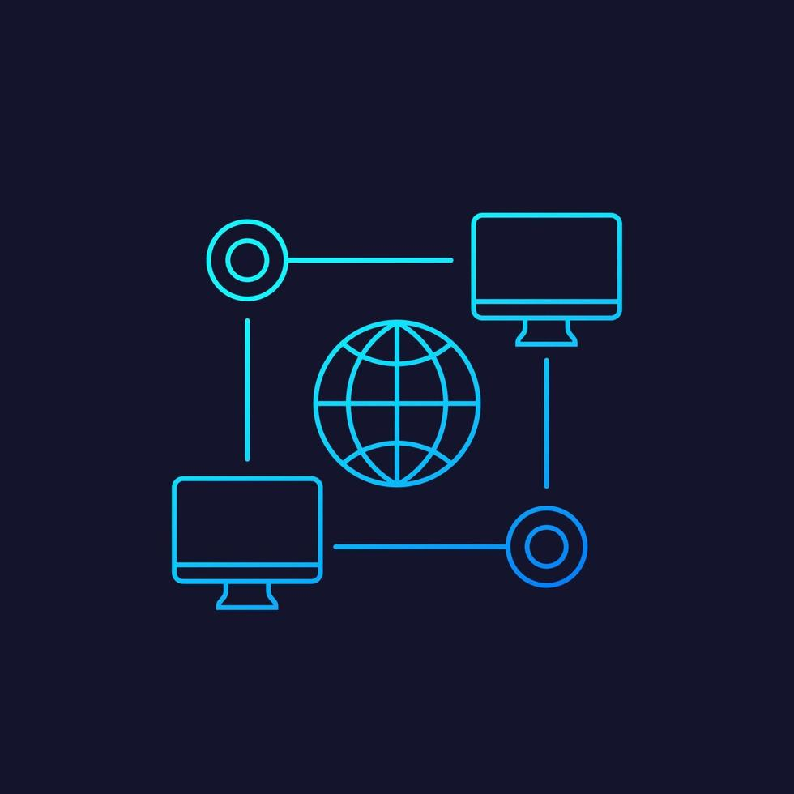
Haute disponibilité : volet réseau
Conception, déploiement et sécurisation d'une topologie réseau à 3 niveaux intégrant haute disponibilité (HSRP) et filtrage (ACL).
Voir le projet🌐 Labs réseau
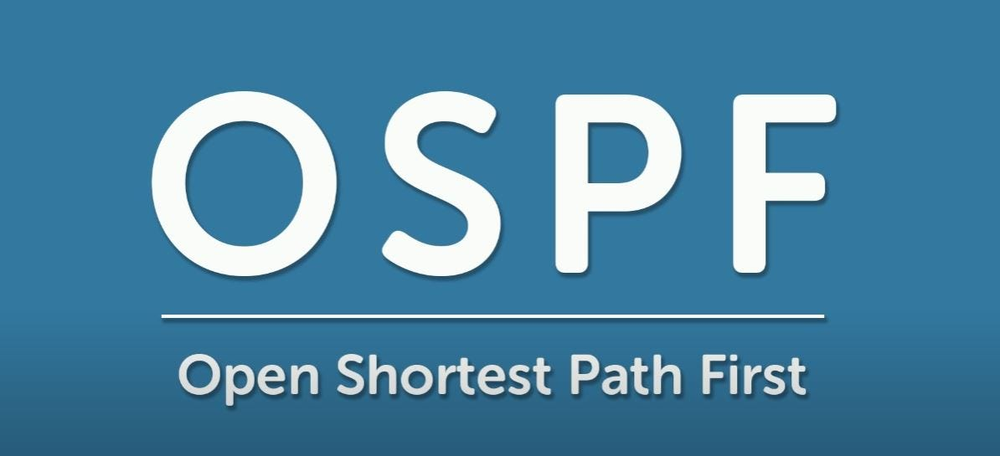
Routage OSPF Inter-Sites
Architecture WAN 3 sites avec routage dynamique OSPF et centralisation DHCP via agents relais.
Voir le projet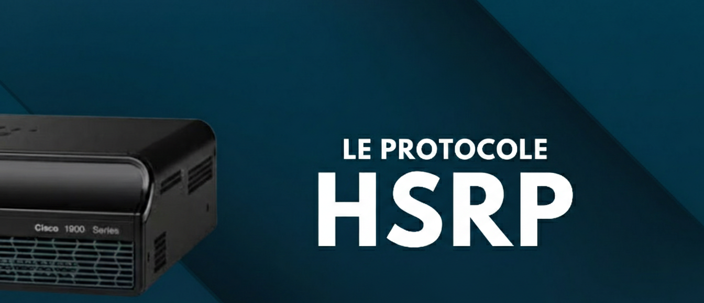
Haute Disponibilité HSRP
Redondance de routeurs et Load Balancing inter-VLAN avec Cisco HSRP et routage dynamique RIP.
Voir le projet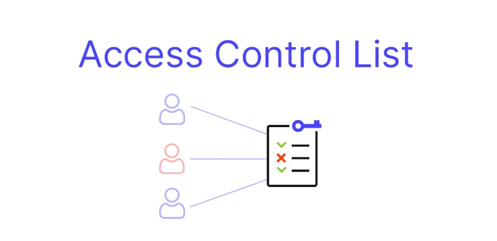
Sécurisation Réseau (ACL)
Mise en place de listes de contrôle d'accès (ACL) étendues sur équipement Cisco pour segmenter et sécuriser les flux.
Voir le projet
Routage Hybride IPv4/IPv6 (RIP)
Architecture redondante en triangle intégrant RIPv2 MD5, RIPng, NAT et DHCP.
Voir le projet📂 Systèmes & services
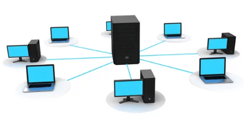
Infrastructure Globale
Synthèse : Conception et interconnexion de tous les services (AD, GLPI, pfSense, VPN...).
Voir le projet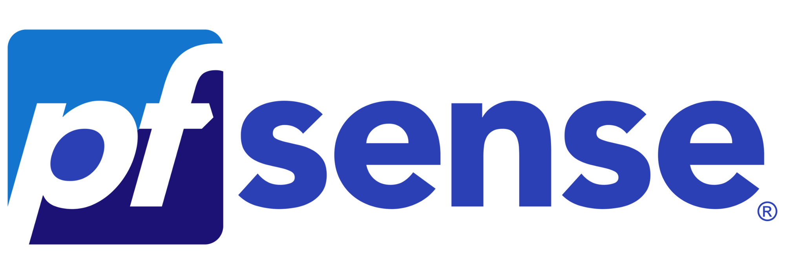
Sécurité Réseau
Mise en place d'un pare-feu pfSense, filtrage des paquets et configuration VPN.
Voir le projet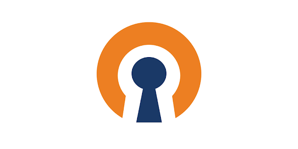
VPN OpenVPN & PKI
Déploiement d'une infrastructure VPN pour les collaborateurs nomades : serveur OpenVPN sous Debian et authentification par certificats (PKI EasyRSA).
Voir le projet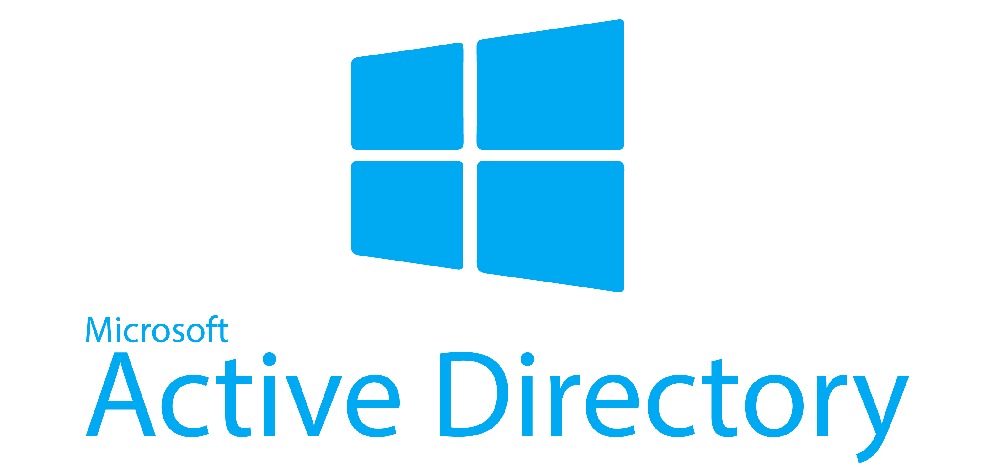
Active Directory
Création d'un domaine Windows, gestion des utilisateurs, GPO et scripts d'ouverture de session.
Voir le projet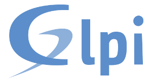
Mise en place GLPI
Installation et configuration d'un serveur de gestion de parc et ticketing pour le suivi des incidents.
Voir le projet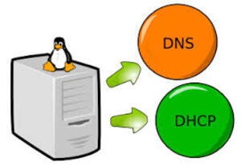
Serveur DHCP & DNS
Administration de services réseaux critiques sous Debian (Bind9 & ISC-DHCP).
Voir le projet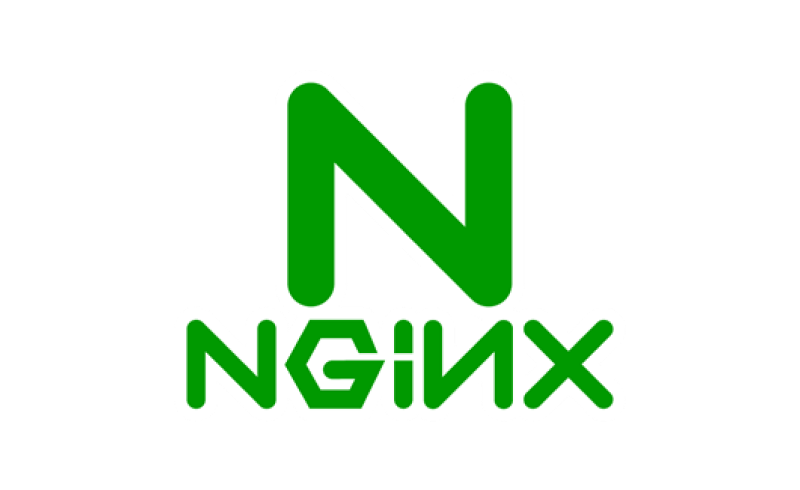
Serveur Web Nginx
Mise en place d'un serveur Web sous Debian 11. Configuration en Reverse Proxy pour sécuriser l'accès.
Voir le projetSupervision (Zabbix/Cockpit)
Déploiement d'outils de monitoring pour l'analyse des performances, la gestion des logs et les alertes proactives.
Voir le projet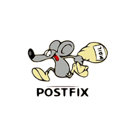
Serveur de messagerie
Mise en place d'une infrastructure mail complète "from scratch" sous Linux et configuration du client lourd.
Voir le projet